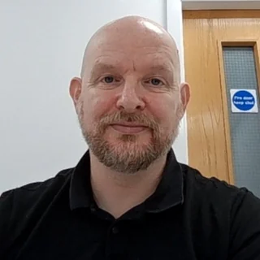
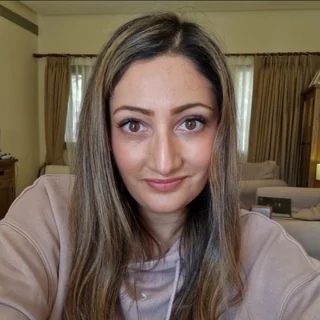

Our purpose
What we are for
This is the community interest statement we registered with the regulator when the Foundation was incorporated. It is the test everything we do has to meet.
Community interest statement
The company's activities will provide benefit to children, families, community organisations, charities and individuals who may otherwise lack access to online safety support and guidance.
CyberSafe Foundation C.I.C. will support these groups by improving online safety awareness, confidence and everyday digital habits through accessible resources, education and practical tools.
The company will work with community partners to provide funded or subsidised access to online safety support, helping to reduce digital risk and improve confidence in navigating online environments.
A community interest company is a UK legal form for social enterprises, created by statute in 2005 and regulated by a dedicated regulator inside Companies House. The closest US parallel is a mission locked social enterprise rather than a 501(c)(3). It is not a US tax exempt entity, so contributions are not deductible as charitable donations for US tax purposes.
Who we are
The directors
Both directors are unpaid. Neither takes a salary, a dividend or a fee from the Foundation.

Lee Lawrenson
Founder and Director
Founded the Foundation in March 2026. Lee was raised in children's residential homes from the age of five until eighteen, which is the reason the Foundation's work with children in care and the organizations supporting them matters to him. He is studying for an MSc in Cyber Security and also runs CyberSafe Coach Plus Ltd, which builds the platform.

Nisha Warburton
Non Executive Director
Appointed in August 2026 in an advisory and supervisory role, bringing independent judgement to the Foundation's decisions and acting as a second bank signatory. Nisha is also a director of SEN2GETHERUK C.I.C. and SEN2GETHER Limited, working with families of children with special educational needs.
Governance
How we are held to account
Company details
- CyberSafe Foundation C.I.C., company number 17106862
- Incorporated 20 March 2026 in England and Wales
- Private company limited by shares, CIC Regulator model articles
- Registered office 124 City Road, London EC1V 2NX
- Contact admin@cybersafefoundation.org.uk
- Filings are public at Companies House
Ready to apply?
Email us your details and we will review your application by hand.
Email us to apply